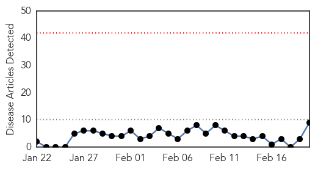
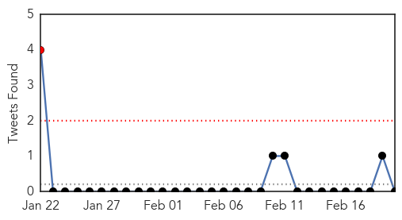
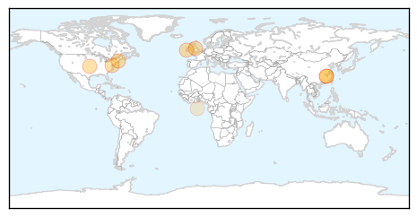
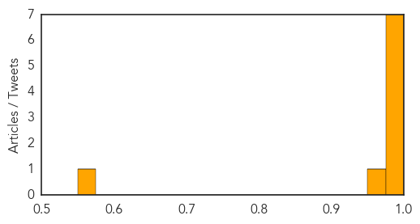
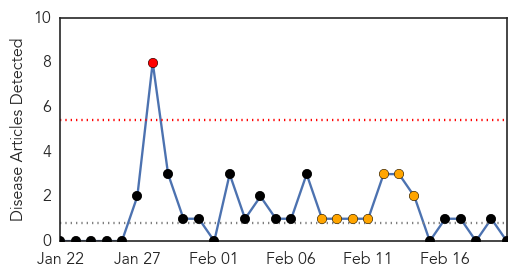
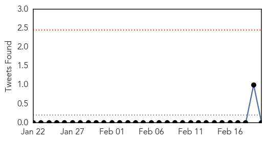

Swine Flu
30-Day Web Trend
0 alerts, 0 warnings

30-Day Twitter Trend
1 alerts, 0 warnings

Article Locations
Article Confidences
Top Articles:
- 1.000
- Swine flu case confirmed at Cork University Hospital
- 1.000
- Flu virus forces CUH to limit visitor numbers
- 1.000
- HeraldNet.com - Nation & World
- 1.000
- H1N1 flu returns
- 0.999
- CDC: Flu hitting younger populations this season
- 0.993
- Flu cases in the UK hit an all time low - because we've all been stuck indoors
- 0.989
- The Portland Press Herald / Maine Sunday Telegram
- 0.971
- Strict visitor restrictions at Cork University Maternity Hospital following swine flu outbreak
- 0.561
- U.S. Prosecutors Broaden Criminal Investigation of North Carolina Environmental Regulators - FairWarning
Top Tweets:
-
No tweets found for Feb 20, 2014
MERS
30-Day Web Trend
1 alerts, 7 warnings

30-Day Twitter Trend
0 alerts, 0 warnings

Article Locations

Article Confidences

Top Articles:
-
No articles found for Feb 20, 2014
Top Tweets:
- 0.636
- Updated analysis of MERS-CoV genomics; Medical response to Typhoon Haiyan / Yolanda. HealthSecurity http://t.co/JWXBy2QaPh